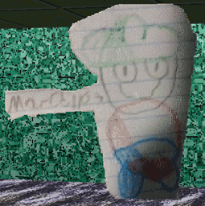

"Papercello" (or just "PC") is an antagonist in "Marcello's Fun House"(/"MFH").
Aliases
Papercello, Paper Marcello, Marcello.
Appearance
Papercello appears as a poorly drawn version of Marcello, text floats near his chin reading "Marcello" with an arrow pointing to him. There is what appears to be a small blood stain near his legs.
Gallery

Trivia
Papercello was made by Marcello.
Papercello does nothing ingame.
Papercello has blood on him for an unknown reason.